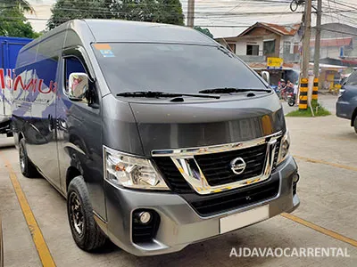
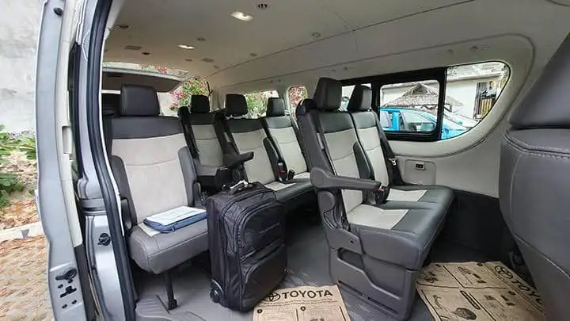
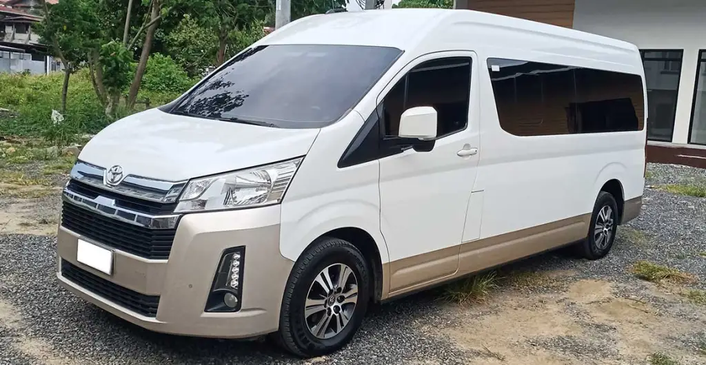

Airport Transfer: Top 5 Benefits of Renting a Car
Airport transfer car rental service – VIP transfers, special guests, business partners for convenient and quality transfers. Brings you and your guests to and from the airport with ease. With the rent a car service, no waiting, no ques and less hassle specially during peak hours and bad weather condition.
Airport Transfer Rates
₱2,000 per transfer for single-point destination.
₱2,500 for delayed flights or additional waypoints (e.g., lunch/dinner stop, souvenir store)
– includes the first 3 hours and waiting time.



Book Your Airport Transfer
CHAT: Viber / WhatsApp (+63) 926-733-5449
MOBILE: Globe (+63) 926-733-5449 | Smart (+63) 998-959-1074
Email: AJDavao88@gmail.com
Facebook: AJDavao Car Rentals
Takeaways of Renting a Car for Airport Transfers in Davao
Renting a car for airport transfers in Davao provides numerous benefits that enhance convenience and comfort for travelers. Here are the top five:
1. Timely Pickups and Drop-offs: A rental car service ensures that you’re picked up or dropped off on time, making it easy to stick to your travel schedule without the stress of public transportation delays.
2. Comfort After a Long Flight: After a tiring flight, a private airport transfer offers a relaxing, comfortable ride to your destination, especially with spacious and air-conditioned vehicles.
3. No Parking or Navigation Hassles: You won’t need to worry about finding parking at the airport or navigating unfamiliar roads. A professional driver takes care of everything, allowing you to relax and enjoy the ride.
4. Safety and Security: Rental services with drivers often provide trained and experienced drivers who know Davao’s roads well, enhancing safety and ensuring a smooth journey.
5. Door-to-Door Convenience: Airport transfers with a rental car provide direct, door-to-door service, dropping you off right where you need to be, whether it’s a hotel, meeting, or local destination. This level of convenience is hard to beat, especially with luggage in tow.
Ready to Book Book Your Airport Transfer?
Looking for an Book Your Airport Transfer? We offer reliable vehicles at great prices. Reserve your ride today and hit the road!
CHAT: Viber / WhatsApp (+63) 926-733-5449
MOBILE: Globe (+63) 926-733-5449 • Smart (+63) 998-959-1074
E-mail: AJDavao88@gmail.com
Facebook: AJDavao Car Rentals